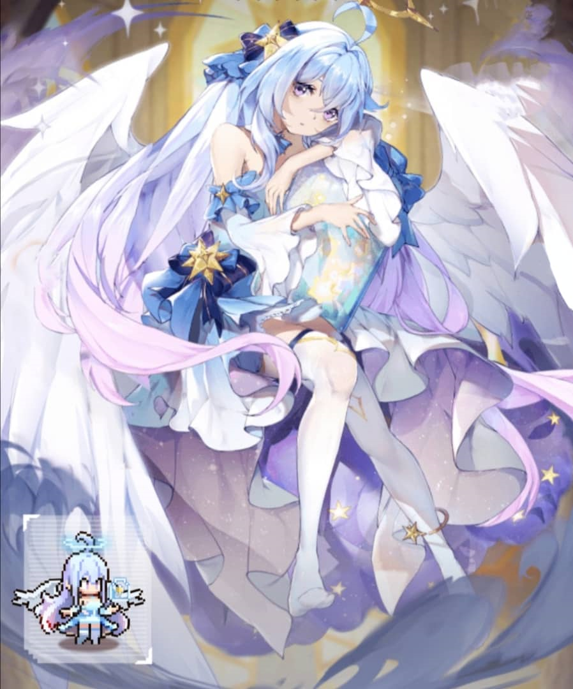
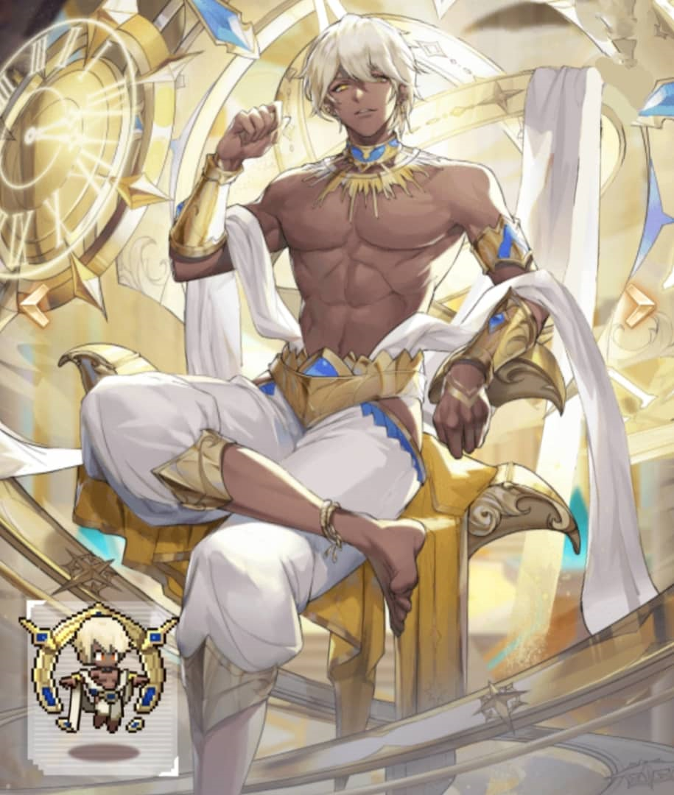
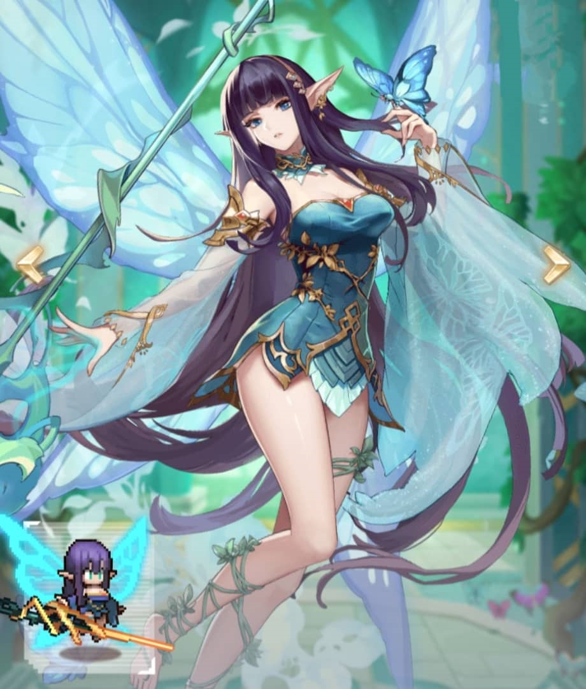

The characters from my favourite games
My favourite game is pixel heroes

It is a Rouguelike-independent game that combines skill cards eith strategy.
In the game, players can form a team of heroes to overcome levels and fight against bosses.
The game as a whole adopts a retro pixel art style and simple cartoon heroes and monster images,
as well as Western magical game scenes.
It consists of five groups
- Rise of the Alliance (human)
- Orc (wilderness)
- Elf (forest)
- Gods (holy court)
- Lord of the Pit (demon)

The first characters is call Bai Xing. Bai Xing turns out to be a star that emits white light. She appears in every quiet night.
Bai Xing likes to fly freely in the night sky. You may see a white stream of light flying by, which is the footprint she left.
Ignorant girls will also sneak into people's dreams when they are asleep. Those strange and bizarre dreams are like gorgeous rainbows,
allowing Bai Xing to begin to understand the world a little bit, it turns out that there are such beautiful colors.
But occasionally, dreams will be of unknown colors and dominated by a depressing atmosphere. At this time, the girl will use her unique "power",
and Bai Xing will collect these unpleasant dreams into her wishing bottle, and those uneasy and restless dreams will be stored in her wishing bottle.
In the end, they will all turn into lively stars and return to peace. In the world in Bai Xing's eyes, warm colors will once again dominate this dream.
In this way, day after day, year after year, in the lonely night, there are still good dreams accompanying her.

The characters is call Kroos. As early as when the mainland had not yet taken shape, a group of gods had already been born. They each performed their own duties,
and the world that runs today was created. Kroos is life bred in the torrent of time, a god born from time and order.
From the moment Kroos gained consciousness, he was in the desolation, and the only thing accompanying him was the "Wheel of Time"
that emerged from the desolation. The clock that coexists with the sky and the earth records everything left by the years.
When Kroos touched this clock, he saw the vast galaxy, and the stars surrounding him were the rapid passage of time. During this period of time,
life was born from the desolation, and Kroos watched the emergence of civilization. The stardust he picked up casually recorded one story after another.

The ancient fairy clan possesses powerful bloodline power. Illea has possessed the powerful power inherited from the bloodline since she was born.
As the highest combat power of the fairy clan, she worshiped under the previous patriarch. The unique elemental affinity has made Illea what she is today.
When she was eighteen years old, she felt a call from somewhere. Illea rushed to the ancient battlefield in the boundless sea without hesitation and became the first challenger.
The person who enters the labyrinth and obtains the Holy Martial Arts. When the "Eternal Spear", which symbolizes the sacred object of the elves, was reappeared,
the ancient trees glowed again, and the power of the jumping elements of the gun was daunting. Illea, holding the eternal spear, was invincible. As the first person
in the millennium Descendants of faeries who hold sacred objects.